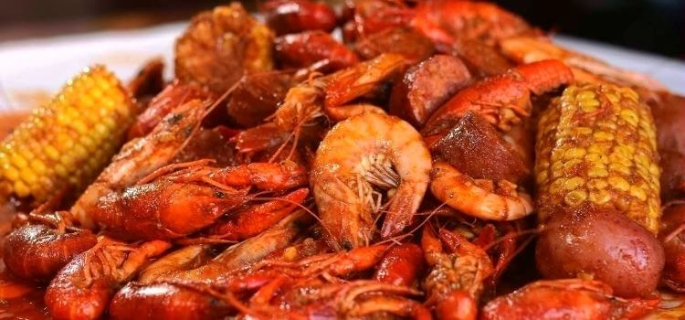

Boiling Crab Shrimp

This Cajun style shrimp in a spicy garlic butter sauce will have you wanting more
Ingredients
- 1 pound shrimp
- 2 sticks or 8oz butter
- 1 head garlic
- 1 tbsp sugar
- 1 tbsp hot sauce
- 2 tbsp of the following:
- Old Bay Seasoning
- Lemon Pepper
- Paprika
- Cayenne Pepper
- Cajun Seasoning
Steps:
- Melt Butter in sauce pan over medium heat
- Add garlic and cook until fragrant
- Toss in Seasonings, hot sauce, and sugar. Stir to combine and set heat to low and allow to simmer
- Bring a big pot of water to boiling
- Add shrimp to water and cook for 2 minutes
- Toss shrimp in sauce
- Serve and enjoy